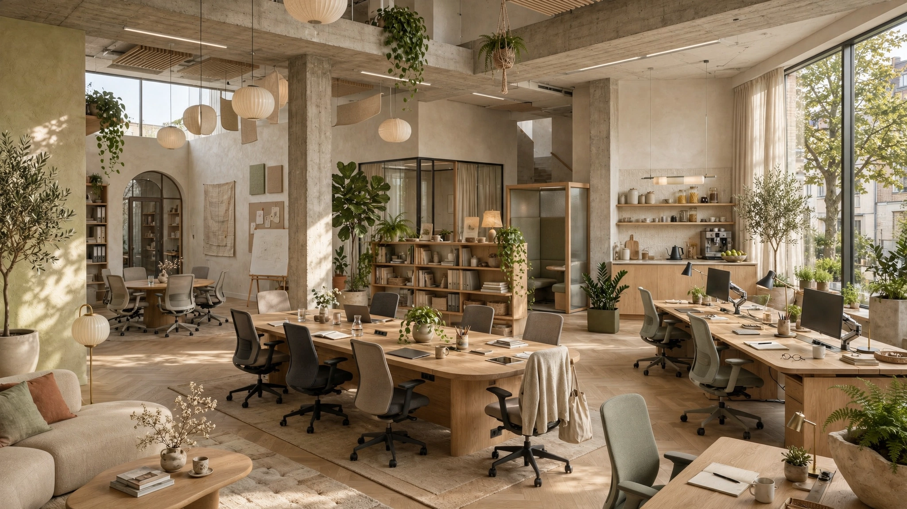
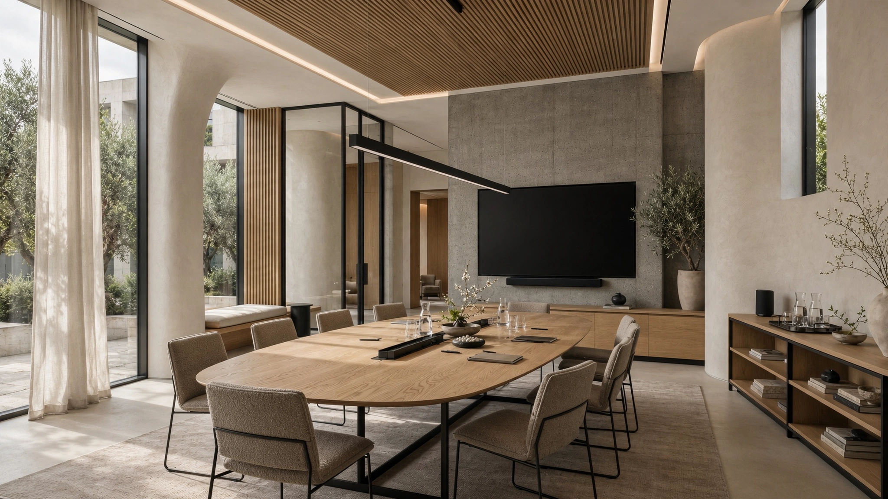
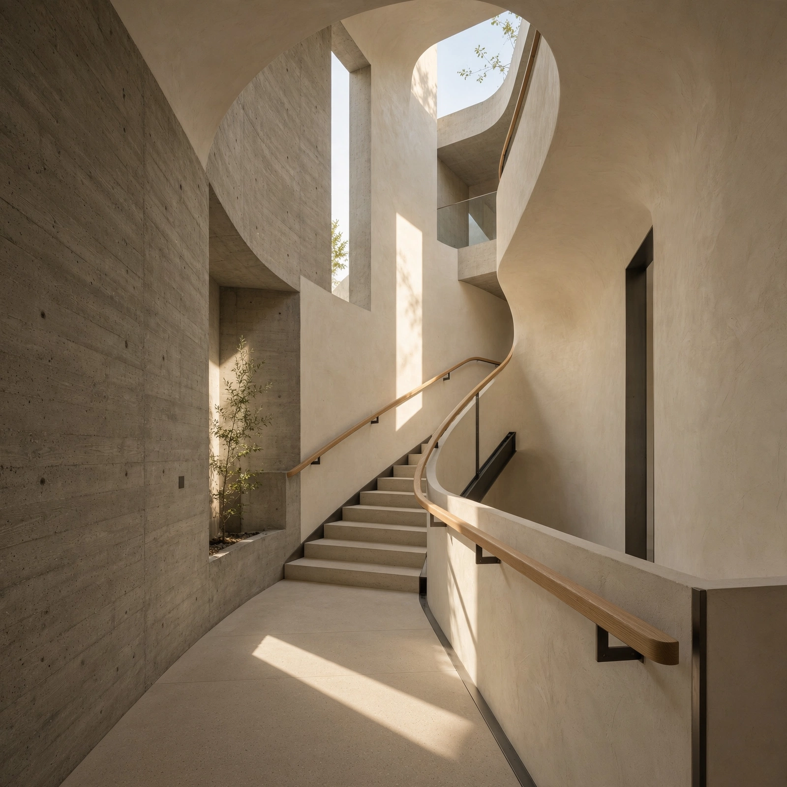
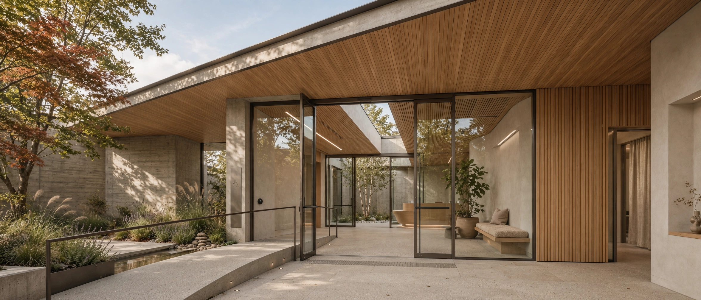
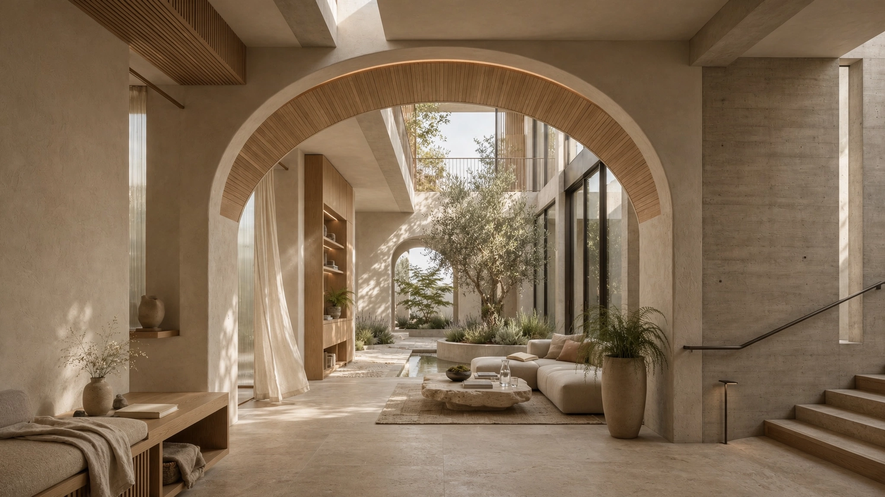
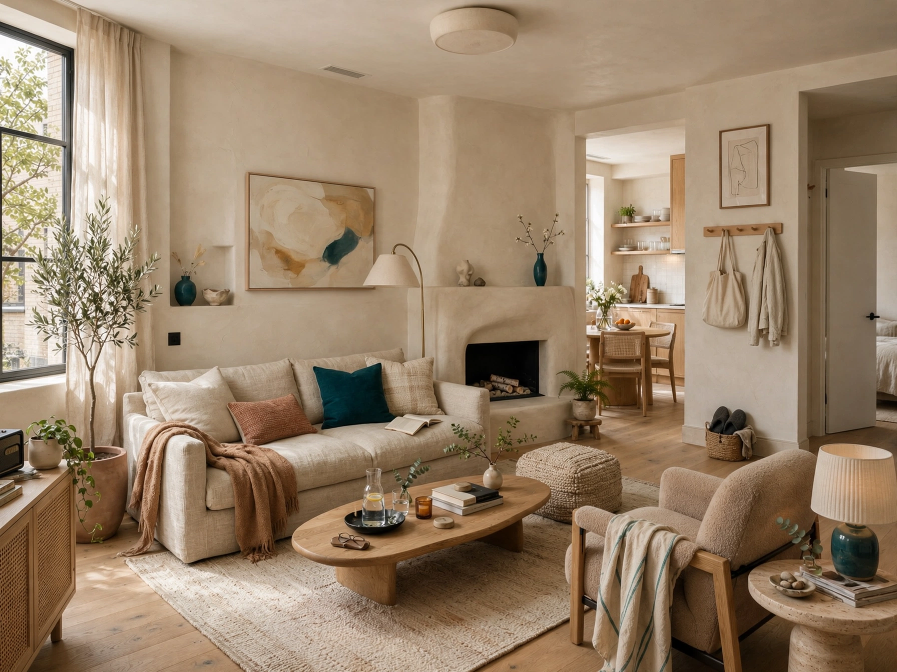
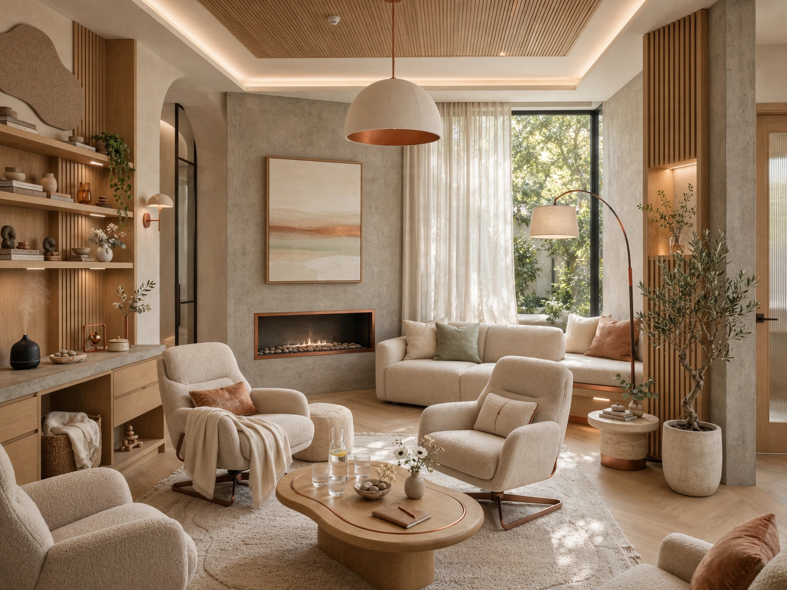
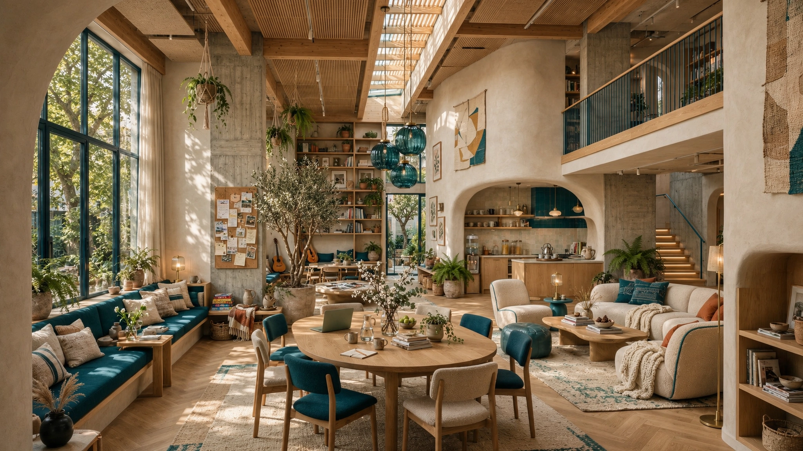
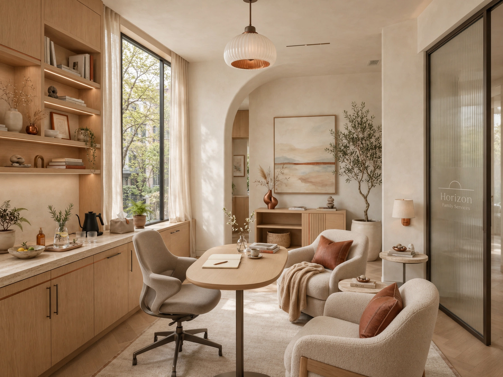

01 Housing Navigation — Concept
Bridge units → rapid rehousing → tenancy sustainment. Illustrative pathway.

Conceptual demonstration of a dual-entity shared architecture uniting Project Horizon — community infrastructure — and Horizon Family Services, a clinical practice. One campus concept, two missions — warm natural daylighting throughout. Information subject to verification and approval.
Concept note: Horizon is illustrated as dignity-centered — human-scale architecture paired with clinical excellence. Textured concrete, warm oak, and soft plaster are design directions, subject to approval.

Conceptual narrative — descriptive language for demonstration only, subject to client review and verification.
Illustrative campus concept centered on natural daylight, acoustic privacy, and material honesty. Light oak millwork, plaster walls in warm white, and terrazzo floors are proposed directions while maintaining clinical rigor — final specifications pending approval.
Shared architecture is proposed to allow both entities to co-locate: community housing and resource navigation under Project Horizon, and licensed outpatient and therapy under Horizon Family Services. One front-door concept, with referral flow to be operationally verified.
Conceptual entity overview — programs and descriptions are illustrative placeholders pending program verification.

Conceptual rendering: high ceilings, acoustic baffles in oak, generous daylight. Programming shown (peer navigation, housing assistance, food security) is illustrative and subject to operational verification.

HZN-P03-A
HZN-P03-BConceptual clinical overview — services and language are placeholders subject to licensure and client approval.

Illustrative services (behavioral health, primary care coordination, dental, pharmacy, pediatric therapy) are shown as a conceptual co-location with community resources. Records, consent, and clinical claims require verification.

HZN-P04-A
HZN-P04-BIllustrative program directory — all pathways are conceptual placeholders, not confirmed service offerings.

Vertical circulation as calm ritual
Bridge units → rapid rehousing → tenancy sustainment. Illustrative pathway.
ID, benefits, employment, food security — illustrative.
Lived-experience navigators, family psychoeducation, community meals — illustrative.
Outpatient, groups, crisis stabilization — concept only, requires verification.
Co-located, same-day concept — operational and licensure verification required.
Early childhood, school liaison, family therapy — illustrative.
Shared consent concept shown — distinct records and compliance to be legally verified.
Placeholder bio for demonstration. Background shown is fictional.
Illustrative — pending verificationPlaceholder clinical lead bio. Licensure shown is fictional.
Illustrative — pending verificationPlaceholder operations bio for layout.
Illustrative — pending verificationPlaceholder partnerships bio.
Illustrative — pending verificationSimulated vacancies for demonstration. Shown to test layout and compensation display patterns. Salary ranges are fictional placeholders. Hiring process language is conceptual.
Illustrative flow shown: human review → work sample → shadow day. Not an active process.
Target: WCAG 2.2 AA interview experience — design intent, not certified. Requires audit post-approval.
[Street address — verification pending]
Illustrative location only. Final address subject to client confirmation.
Hours: [To be confirmed — pending verification]
[Email — verification pending]
[Phone — verification pending]
Conceptual contact channels — not currently routed. Form does not transmit data.